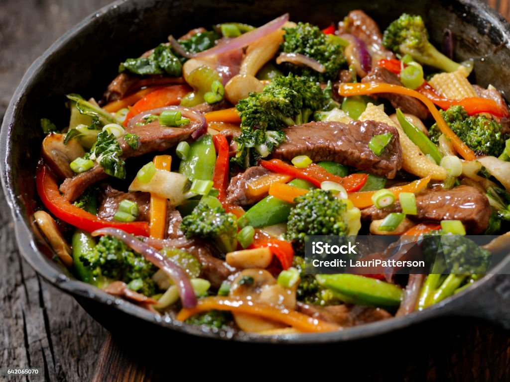

Beef 'n Broccoli

Beef and Broccoli Stir-Fry is a Chinese dish featuring tender beef slices and broccoli florets, stir-fried in a savory and slightly sweet sauce, often with garlic and ginger. It's known for its flavorful combination and quick cooking process.
Ingredients
- Ground bison
- Bell peppers (varied colors)
- Onions
- Broccoli florets
- 1 thumb Ginger, minced
- Carrots
- 5 cloves of garlic, minced
- 10 ml cooking oil
- salt, black pepper, MSG, ground white pepper to taste
For the sauce,combine:
- 70 ml soy sauce
- 30 ml oyster sauce
- 20 g brown sugar
- 10 g mirin or shao xing wine
- 20 ml rice wine vinegar
- 10 ml sesame oil
Steps:
- Marinate Beef: In a bowl, mix the thinly sliced beef with a tablespoon of soy sauce and a teaspoon of cornstarch. Let it marinate for at least 15 minutes.
- Prepare Sauce: In a separate bowl, combine 1/4 cup of soy sauce, 2 tablespoons of oyster sauce, 1 tablespoon of brown sugar, and 1 tablespoon of cornstarch. Add a bit of water or beef broth to thin it out.
- Cook Vegetables: Cook the minced ginger, garlic, broccoli florets, onions and bell peppers until they're soft and slightly charred.
- Stir-Fry Beef: Add the beef and stir-fry until it's browned and nearly cooked through.
- Combine Ingredients: Add the sauce. Stir everything together and cook for an additional 2-3 minutes, or until the sauce thickens and coats the ingredients.
- Serve: Once everything is heated through and coated with sauce, remove from heat. Serve your Beef and Broccoli Stir-Fry hot with rice. Enjoy!